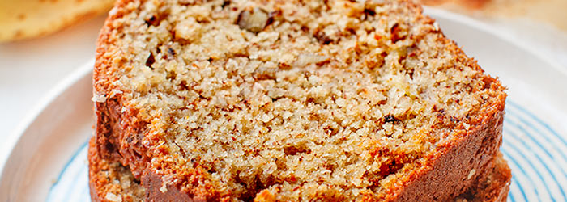

Banana bread

Description
Our most popular banana bread is moist, delicious, and absolutely packed with banana flavor.
Ingredients
- Flour
- Baking soda
- Salt
- Butter
- Brown sugar
- Eggs
- Bananas
Steps
You'll find the full, step-by-step recipe below — but here's a brief overview of what you can expect when you make this simple banana bread:
- Combine the dry ingredients in one bowl.
- Beat the butter and sugar in another bowl. Add the eggs and mashed bananas.
- Add the wet mixture to the dry mixture.
- Pour the batter into a loaf pan and bake in a preheated oven.
Return to main page